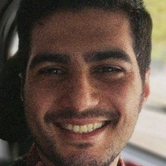

From anywhere
Another city, another country, or just too tired to cross Tehran on a weeknight. If you can hear us, you can join us.
A free English discussion on Google Meet, for fluent speakers wherever you are.
On Fridays we share one long café table in Tehran. Every Monday night, the same conversation moves to a screen: one topic, one member moderating, two hours of honest talk in English.

Your moderatorNavidThe online table started for members who couldn’t always make it to the café. It turned into its own small ritual: a lamp, a cup of tea, and a circle of faces from across the city and beyond.
Another city, another country, or just too tired to cross Tehran on a weeknight. If you can hear us, you can join us.
A small circle on purpose. Everyone speaks, nobody hides behind a muted square, and the moderator makes room for quiet voices.
No teacher, no script. Each call is moderated by a member who brings a topic they care about and a handful of questions.
“The most valuable participant in the room is not the person who talks the most. It’s the person who says the most with the fewest words.”
From the .TED discussion standards
7 calls since the online table came back on 28 September 2026, and 38 questions between them. Open any card to see what the moderator asked, and borrow them for your own table.
In the beginning of friendships and relationships: what we saw, and why we looked away.
The friendships we thought would last forever, and what they left behind.
Being new at something: the mistakes, the expectations and the fastest way up.
Echo chambers, evidence, and how to disagree without turning a conversation into a competition.
Books, audiobooks, adaptations and the long-form stories that changed us.
Hurry, boredom and the strange discomfort of having nothing to do.
When a career, a relationship or a carefully planned future falls apart: do you fight to get the old life back, or find an outcome you never planned?
Before the autumn relaunch, a few calls ran in the winter and early summer of 2026.
After each call, someone usually drops the words that came up into the group, so nobody leaves with a half-remembered term.
Yes. Besides the Friday café table in Tehran, .TED runs a free online English discussion on Google Meet every Monday, 8 to 10 p.m. Tehran time. Each call has one topic and a member as moderator.
No. The online table is for fluent English speakers anywhere: other cities in Iran, or abroad. All you need is a quiet corner, a microphone and a decent connection.
Yes. Like the Friday table, it is a free discussion run by members. There is no fee and no ticket.
Up to 12. Names go on a list in our Telegram group during the week; a small circle means everyone gets airtime.
No. There is no teacher, no drills and no band scores. It is a conversation between people whose English is already fluent, so we ask for a good level before your first call.
Send a short voice message in English to Pouria on Telegram (@pjsofts): who you are, what you do, and one idea you would like to talk about. We will add you to the online group, where the topic and the Meet link are posted.
Free, member-led, and only for people who already speak English fluently and love a real conversation.
In Tehran on Fridays? Join the café table too · Every Friday topic · معرفی به فارسی